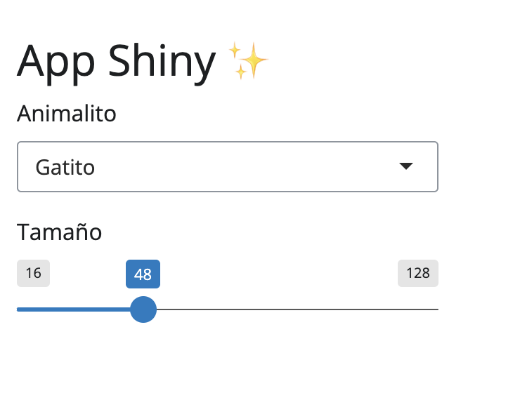

Temas de colores personalizados en apps Shiny
9/10/2025
Elevar tus aplicaciones Shiny al siguiente nivel es muy fácil! Una app con un diseño atractivo y profesional puede marcar la diferencia entre que alguien la use o no, o bien, que alguien la recuerde o no!
En este tutorial veremos cómo personalizar los temas de colores en tus aplicaciones Shiny utilizando el
paquete {bslib}, y además combinaremos esto con la capacidad para que nuestros gráficos {ggplot2} se ajusten automáticamente al tema gracias
al paquete {thematic}.
Crear una aplicación Shiny básica
Comencemos con una aplicación Shiny muy básica, que no tiene ningún tema de colores personalizado. El código es el siguiente:
library(shiny)
library(bslib)
ui <- page_fluid(
h1("App Shiny ✨"),
# selector de opciones
selectInput("animal", label = "Animalito",
choices = c("Gatito", "Gallineta", "Ratita")),
# deslizador de tamaño
sliderInput("tamaño", label = "Tamaño",
min = 16, max = 128, value = 48, ticks = FALSE),
htmlOutput("animales")
)
server <- function(input, output, session) {
}
shinyApp(ui, server)
En esta aplicación extra básica tenemos un texto, un selector de alternativas, y un deslizador numérico para seleccionar valores.
Cambiar los colores de una app Shiny
Para cambiar el tema de colores, usaremos la función bs_theme() del paquete {bslib}. Esta función nos permite definir los colores principales de la aplicación, y luego aplicarlos a la interfaz de usuario con el argumento theme de la función que usemos para construir la UI o interfaz de nuestra app (en este caso, page_fluid()).
Para definir los colores del tema, agregamos el argumento theme a page_fluid(), y definimos el tema de la siguiente manera:
theme = bs_theme(bg = "#EAD1FA",
fg = "#553A74",
primary = "#8557AB")
Aquí se configuran los tres colores principales: el fondo (bg), el color de los textos (fg), y el color principal (primary) que se usa en los botones, barras de navegación, y otros elementos interactivos.
En este caso, pondremos los colores de este mismo sitio 💜
Agregar funcionalidad a la app Shiny
Antes de seguir, agreguemos alguna funcionalidad a nuestra app! En la función server agregaremos el siguiente código para hacer que la app muestre el emoji del animal seleccionado junto a un texto, y el deslizador nos permitirá cambiar el tamaño del animal elegido:
server <- function(input, output, session) {
# generar animalito con texto y emoji
output$animales <- renderUI({
# animal y texto según selección
if (input$animal == "Gatito") {
animal <- list("texto" = "Miu",
"emoji" = "🐈")
} else if (input$animal == "Gallineta") {
animal <- list("texto" = "Cocorocó",
"emoji" = "🐓")
} else if (input$animal == "Ratita") {
animal <- list("texto" = "Mimimi",
"emoji" = "🐁")
}
# generar interfaz para mostrar el animalito
div(
# título del animal
h3(em(animal$texto)),
# emoji del animal
div(animal$emoji,
# tamaño del animalito
style = css(font_size = paste0(input$tamaño, "px"))
)
)
})
}
Ahora sí, veamos cómo cambia la app al aplicar este tema:
Queda súper bonito! ☺️ Encuentra el código completo de esta app en este Gist de Github.
Aplicar el tema de tu app Shiny a tus gráficos
Ahora que definimos colores base para el tema de la aplicación, podemos usar {thematic} para aplicar los mismos colores a los gráficos, tal como vimos
en el tutorial de temas para {ggplot2}..
Primero hagamos una app básica que muestre un gráfico:
library(shiny)
library(bslib)
library(dplyr)
library(ggplot2)
ui <- page_fluid(
br(),
h1("App Shiny ✨"),
# selector de números
sliderInput("filtro", label = "Filtrar",
min = 5, max = 10, value = 1),
# gráfico
plotOutput("grafico_barras", width = 320, height = 200)
)
server <- function(input, output, session) {
datos <- reactive({
iris |>
filter(Sepal.Length >= input$filtro)
})
# generar un gráfico de barras
output$grafico_barras <- renderPlot({
datos() |>
ggplot() +
aes(Sepal.Length, Sepal.Width) +
geom_point()
})
}
shinyApp(ui, server)
Esta aplicación tiene un selector de números que filtran los datos, que a su vez alimentan el gráfico. Al cambiar la selección de números, el gráfico se actualiza gracias a la reactividad del objeto datos().
Aplicar el tema es tan sencillo como agregar el tema en el argumento theme de page_fluid():
theme = bs_theme(bg = "#EAD1FA",
fg = "#553A74",
primary = "#8557AB")
Luego, para que el gráfico adopte la paleta de colores del tema, solamente tenemos que cargar el paquete {thematic} con library(thematic), y luego activar el uso de temas con thematic_shiny() antes de la interfaz/UI, y listo! No es necesario cambiar nada en el código del gráfico ni del resto de la aplicación.1
La parte superior de la aplicación quedaría así:
library(shiny)
library(bslib)
library(dplyr)
library(ggplot2)
library(thematic)
thematic_shiny() # activar el tema
ui <- page_fluid(
# definir los colores del tema
theme = bs_theme(bg = "#EAD1FA",
fg = "#553A74",
primary = "#8557AB")
# el resto de la app...
Listo! Así de fácil. Ahora no hay excusas para hacer que tus aplicaciones se vean bonitas y dejen una buena impresión en sus usuarios.
-
a menos que el gráfico ya tenga aplicado un tema de
{ggplot2}comotheme_minimal(), en cuyo caso habría que eliminarlo para que el tema de{thematic}funcione correctamente. ↩︎